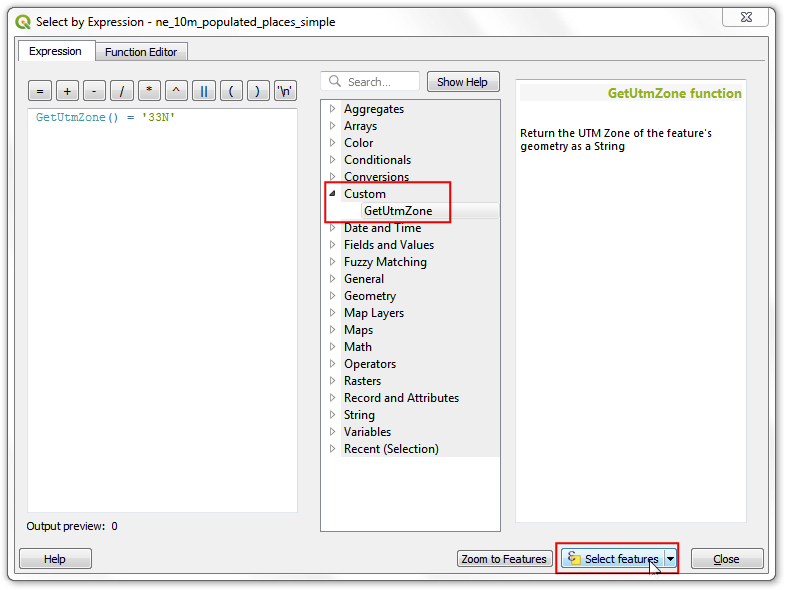
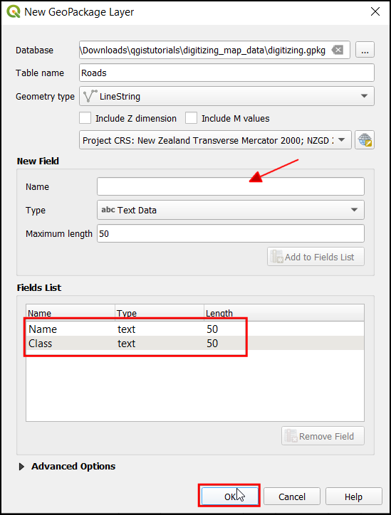
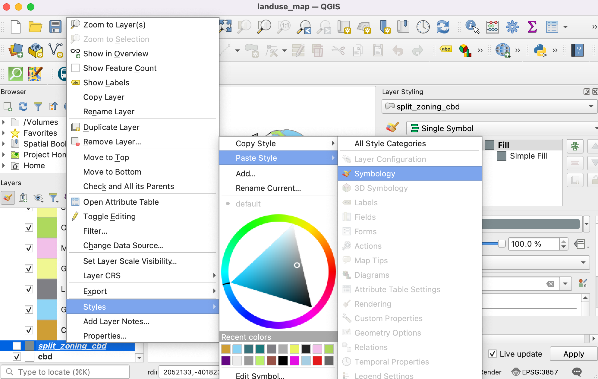

Interpolating Point Data (QGIS3)¶
Interpolation is a commonly used GIS technique to create a continuous surface from discrete points. A lot of real-world phenomena are continuous - elevations, soils, temperatures, etc. If we wanted to model these surfaces for analysis, it is impossible to take measurements throughout the surface. Hence, the field measurements are taken at various points along the surface and the intermediate values are inferred by a process called ‘interpolation’. In QGIS, interpolation is achieved using the built-in Interpolation tools from the Processing toolbox.
Overview of the task¶
We will take field depth measurements for Lake Arlington in Texas and create an elevation relief map and contours from these measurements.
Alte competențe pe care le veți dobândi¶
Creating contours from point data.
Masking no-data values from a raster layer.
Adding labels to a vector layer.
Obținerea datelor¶
Texas Water Development Board provides the shapefiles for completed lake surveys.
Download the 2007-12 survey shapefiles for Lake Arlington.
Pentru comoditate, puteți descărca datele eșantion utilizate în acest tutorial, direct de la adresa de mai jos.
Sursa datelor: [TWDB]
Procedura¶
Open QGIS, in Browser locate and drag the
Arlington_Soundings_2007_stpl83.shpthe layer to canvas.

A Select Transformation of Arlington_Soundings_2007_stpl83 dialog box will appear, leave the select to default and click OK.

The layer will be added, now locate and drag the
Boundary2004_550_stpl83.shplayer to canvas.

The layer will be added to the canvas, now turn off this layer to visualize the
Arlington_Soundings_2007_stpl83.

Click the Zoom In icon and select a small area on the screen. As you zoom closer, you will see the points. Each point represents a reading taken by a Depth Sounder at the location recorded by a DGPS equipment.

Select the Identify tool and click on a point. You will see the Identify Results panel show up on the left with the attribute value of the point. In this case, the
ELEVATIONattribute contains the depth of the lake at the location. As our task is to create a depth profile and elevation contours, we will use these values as input for the interpolation.

From Browser locate and drag the
Islands_2004_550_stpl83.shplayer to canvas.

The layer will be added to the canvas, this layer has the information about the islands in the region which should have a constant elevation (should not be interpolated).

From the Processing Toolbox, search and locate the tool. Double-click to launch it.
Notă
Interpolation results can vary significantly based on the method and parameters you choose. QGIS interpolation supports Triangulated Irregular Network (TIN) and Inverse Distance Weighting (IDW) methods for interpolation. The TIN method is commonly used for elevation data whereas the IDW method is used for interpolating other types of data such as mineral concentrations, populations etc. See the Spatial Analysis module of the QGIS documentation for more details.
In the TIN Interpolation dialog box, select
Arlington_Soundings_2007_stpl83as the Vector layer,Elevationas the Interpolation attribute. Then click on the Add icon.

Now, select
Islands_2004_550_stpl83as the Vector layer,Elevationas the Interpolation attribute. Then click on the Add icon. Now change the Type of the layer asBreak lines.

Notă
A Break line allows us to model sudden interruptions in the elevation while modeling surface layers. Specifying the layer type to be Break lines will tell the interpolation algorithm to use a constant elevation for the islands instead of interpolated values from the points.
In Extent click on the
...and select theBoundary2004_550_stpl83.

In Output raster size, set the Pixel size X and Pixel size Y to
5. Then click on the...under Interpolated to save the layer aselevation_tin.tif. Click Run.

Now a new layer
elevation_tinwill be added to the canvas.

From the Processing Toolbox, search and locate the tool. Double-click to launch it.

In Clip raster by mask layer dialog box, select
elevation_tinas the Input layer,Boundary2004_550_stpl83as the Mask layer. Then click on the...under Clipped (mask) to save the layer aselevation_tin_clipped.tif. Click Run.

Now a new layer
elevation_tin_clippedwill be added to the canvas. Click on the Open the Layer styling panel icon.

Set the Symbology to
Singleband pseudocolor, click on the arrow in Color ramp and selectInvert color ramp, enter0in Label precision. Click Classify.

From the Processing Toolbox, search and locate the tool. Double-click to launch it.

In the Contour dialog box, select
elevation_tin_clippedas the Input layer, enter5.000in the Interval between contour line. Then click on the...under Contours to save the layer ascontour.gpkg. Click Run.

Notă
The interval is specified in the unit of the CRS of the layer. Our source data is in the EPSG:2276 NAD83 / Texas North Central (ftUS) - so the interval for coutours will be interpreted as 5 feet.
Now a new layer
contourwill be added to the canvas. Click on the Open the Layer styling panel icon. Switch to Labels.

Select
Single label, in Value chooseELEV.

Now switch to Placement and change it the Mode as
Curved.